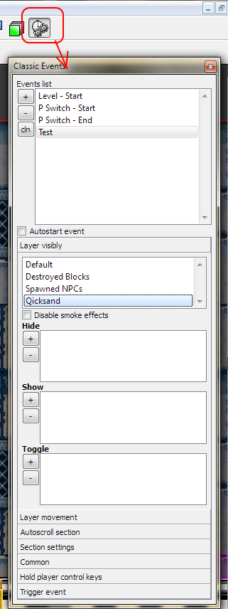

Events - theese is an automatical actions, dynamicly controling the game process and makes changing of level, game, object settings. They can be starts automatically, on sprcial actions.
For add event in list, simply press on "+" button. for remove - "-". You can duplicate current layer by "cln" [clone] button.
Event can be start automatically if you set checkbox "Autostart".
There are exist the system evens, which you can't
delete them:
"Level - start" - starting automatically on level start, you
can use them for pre-set visibly of events, or display greeting message, or
start moving of spike wall, etc.
"P Switch - Start" - This event starts if you activate the sprcial button, named as "P-Switch". You can made, for example, showing of layers with surprise for yout playable character.
"P Switch - stop" - This event starts, if P-Switch time was end. This event you can use, for example, for hide same layer with surprise.
Note: You can drag events and change his position in list
You can rename event by double click on layer name.
New name of event will be applied to
all items which using them.
Events toolbox

Copyright © 2014 Platforger Game Engine by Wohlstand project. All rights reserved.